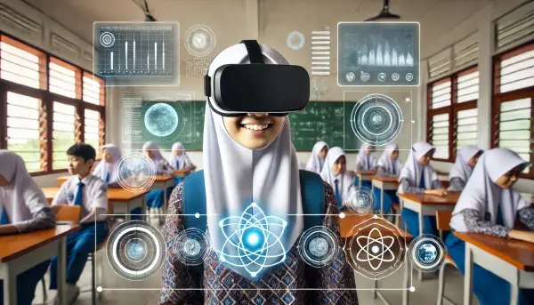

Pernahkah Anda bertanya-tanya bagaimana Kecerdasan Artifisial (KA) bekerja di balik layar? Modul ini akan membimbing Anda melalui pengoperasian, pengaplikasian, dan bahkan kolaborasi dengan berbagai perangkat KA yang ada di sekitar kita. Dari asisten virtual hingga sistem rekomendasi, AI ada di mana-mana!
Kita akan menyelami perbedaan antara mesin cerdas dan non-cerdas, memahami bagaimana AI membuat keputusan, dan melihat bagaimana AI dimanfaatkan dalam produksi dan pengeditan video yang semakin canggih. Siap untuk menjadi kreator masa depan?
Mesin AI (kecerdasan buatan) dapat dibagi menjadi dua kategori besar: cerdas dan non-cerdas. Perbedaan utama terletak pada kemampuannya untuk belajar, beradaptasi, dan membuat keputusan tanpa diprogram secara eksplisit.
Disebut juga "Narrow AI" atau "Weak AI". Hanya dirancang untuk melakukan satu tugas spesifik dengan aturan tertentu. Tidak bisa belajar atau beradaptasi di luar programnya.
Disebut juga "General AI". Memiliki kemampuan belajar dari data, mengenali pola, dan membuat keputusan otonom. Mereka bisa memodifikasi aturan atau menciptakan strategi baru berdasarkan pengalaman.
Aplikasi penerjemah bahasa seperti Google Translate memanfaatkan AI untuk memahami konteks kalimat dan menerjemahkan secara akurat dalam real-time.
Chatbot medis AI seperti Ada Health atau Halodoc membantu konsultasi awal pasien sebelum ke rumah sakit.
Siswa dapat membuat puisi bertema "kehidupan digital" dengan bantuan ChatGPT lalu mengedit sesuai gaya bahasanya.
AI membuat keputusan berdasarkan data, algoritma matematis, dan model statistik, bukan emosi atau intuisi.
AI membuka banyak peluang karier di berbagai sektor, dari teknologi hingga bisnis kreatif.
Machine Learning Engineer – membangun algoritma agar mesin bisa belajar dari data. Contoh: Seorang ML Engineer di sebuah perusahaan e-commerce membangun algoritma sistem rekomendasi produk. Mereka melatih model menggunakan data historis perilaku pelanggan (misalnya, riwayat pembelian, klik, dan pencarian) untuk memprediksi produk apa yang paling mungkin dibeli oleh pelanggan lain, kemudian mengintegrasikan model tersebut ke dalam situs web.
Data Scientist – menganalisis data besar untuk pola & prediksi bisnis. Contoh: Seorang Data Scientist di sebuah perusahaan telekomunikasi menganalisis data penggunaan jaringan. Mereka menemukan pola bahwa pelanggan yang mengalami penurunan kualitas panggilan di area tertentu memiliki probabilitas tinggi untuk berpindah ke provider lain. Berdasarkan temuan ini, mereka menyarankan perusahaan untuk meningkatkan infrastruktur di area tersebut guna mengurangi tingkat churn (pelanggan yang berhenti berlangganan).
AI Engineer – mengintegrasikan teknologi AI ke produk & sistem. Contoh: Sebuah perusahaan memiliki model AI yang bisa mendeteksi cacat pada produk manufaktur. Tugas seorang AI Engineer adalah mengambil model yang telah dilatih tersebut dan mengintegrasikannya ke dalam jalur perakitan robotik. Mereka memastikan model dapat menerima gambar dari kamera, memprosesnya secara real-time, dan mengirimkan sinyal ke robot untuk memisahkan produk yang cacat.
AI Research Scientist – meneliti algoritma baru di bidang R&D atau universitas. Contoh: Seorang AI Research Scientist di sebuah universitas sedang meneliti cara membuat model bahasa yang lebih efisien dan membutuhkan lebih sedikit data untuk dilatih. Tujuan mereka bukan untuk membuat produk komersial, melainkan untuk memublikasikan temuan mereka di jurnal ilmiah, yang nantinya dapat digunakan oleh komunitas AI untuk mengembangkan teknologi baru.
Computer Vision Engineer – membangun sistem pengenalan gambar & video, dari medis hingga mobil otonom. Contoh: Seorang Computer Vision Engineer bekerja di sebuah startup yang mengembangkan mobil otonom. Mereka membangun algoritma yang menganalisis live-feed dari kamera mobil untuk mengidentifikasi objek seperti pejalan kaki, rambu lalu lintas, dan kendaraan lain. Model ini kemudian memberikan informasi kepada sistem kontrol mobil untuk membuat keputusan real-time tentang pengereman atau akselerasi.
💰 Tingkat pemula: Rp 8–15 juta / bulan.
💼 Berpengalaman 5+ tahun: Rp 25–50 juta / bulan.
Permintaan tenaga kerja AI terus meningkat di berbagai sektor.
Modul ini membahas pengoperasian, pengaplikasian, dan kolaborasi dengan perangkat Kecerdasan Artifisial (KA). Materi mencakup perbedaan mesin cerdas dan non-cerdas, cara AI membuat keputusan, pemanfaatan KA dalam produksi video, serta peluang karir di bidang KA. Kolaborasi manusia & AI menghasilkan karya inovatif.